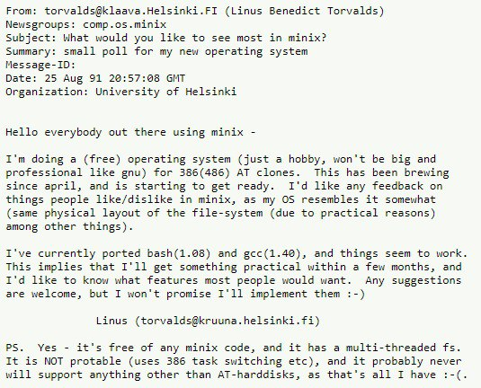

UNIX

In 1965, a collaborative project named MULTICS was begun by AT&T, MIT and GE. It was aimed at creating an operating system to show that general-purpose, multi-user, timesharing systems were ready to be released into the mainstream. However in 1969, AT&T pulled out of the project, frustrated by its slow progress.

Two researchers employed at AT&T decided to reimpliment their experiences by designing another project. They were Ken Thompson and Dennis Ritchie, and the project was called UNICS.

UNICS was a a single-tasking system, without an organizational backing. It was also written in Assembly language, which was one of the reasons why portability wasn't achieved by UNICS. Ken Thompson began working on a new programming language name B, which would serve and a viable replacement for Assembly language. However, Dennis Ritchie began working on a fork of B, initially called NB or "New B" but later changed to C.

C is a much more improved version of B, and was used to rewrite UNICS. After 1973, the UNIX project (initially UNICS) was 95% C and 5% Assembly language. AT&T licensed bought the license for UNIX and the software was officially declared as proprietary.
GNU, GPL and Linux

In 1984, Richard Stallman began developing an operating system named GNU, that was a free software replacement for UNIX. UNIX in 1984 had hundreds of components, so developing a replacement meant that almost every one of those components had to be rewritten. By 1992, they had almost the entire operating system, but one essential component was missing, that was the kernal. The kernal allocates the computer's resources and memory to other programs so they may function.
The GNU project also inspired the GPL. The software under this license is termed as "Free Software", which means that anyone can use, copy, distribute and modify it.
In early 1991, Linus Torvalds, a student of the University of Helsinki started working on an operating system that would allow him to have more control over his computer's resources. It resulted in a kernal which, after several events, was named Linux. In 1992, he liberated it under the GPL license.

This allowed the creation of a whole operating system, complete with GNU's components and the Linux kernal, which would serve as a "free" replacement of Unix.
Linux or GNU/Linux?

Within the free software and the open-source software communities there is controversy over whether to refer to computer operating systems that use a combination of GNU software and the Linux kernel as "GNU/Linux" or "Linux" systems. Proponents of the term Linux argue that it is far more commonly used by the public and media, and that it serves as a generic term for systems that combine that kernel with software from multiple other sources; while proponents of the term GNU/Linux note that GNU alone would be just as good a name for GNU variants which combine the GNU operating system software with software from other sources.
The term GNU/Linux is promoted by the Free Software Foundation and its founder Richard Stallman. Their reasoning is that the GNU project was the main contributor for not only many of the operating system components used in the subsequent development of modern "Linux" systems, but also the associated free software philosophy.
Legacies
There are three main families of GNU/Linux: Debian, Arch and RedHat.
Other operating systems (or distros) are mainly customized and put forth by following the standards these families have set.